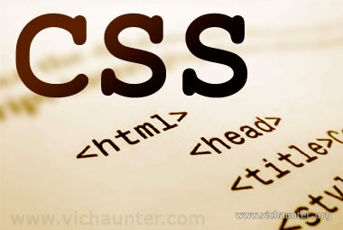

Fundamentos de css
se abordaran los fundamentos de css como los estilos que se pueden usar para darle una apariencia concreta a una pagina web de manera facil y estructurada.
El Propósito de este sitio es identificar estudiar los fundamentos de css y las principales caracteristicas de los Frameworks CSS
se abordaran los fundamentos de css como los estilos que se pueden usar para darle una apariencia concreta a una pagina web de manera facil y estructurada.
se tratan los diferentes estilos que se pueden encontrar en bibliotecas con estilos genericos para dar un diseño o cambiar la apariencia de una pagina web.